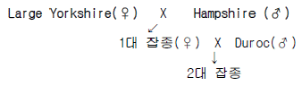
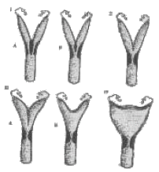
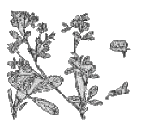
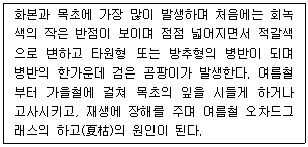
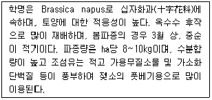

축산산업기사 (2009-08-30 기출문제)
1과목: 가축번식 육종학
1. 닭에서 Goodale 등이 제시한 초년도 산란수를 지배하는 요소인 것은?
- 조숙성
- 우모 발생속도
- 생존률
- 사료이용성
(정답률: 78%)

2. 다음 중 스테로이드 호르몬이 아닌 것은?
- 성장호르몬
- 웅성호르몬
- 발정호르몬
- 황체호르몬
(정답률: 65%)
3. 일반적으로 유전력을 저도, 중도, 고도로 분류할 때 중도(中度)의 유전력의 범위는 몇 %인가?
- 10 ~ 20%
- 20 ~ 40%
- 40 ~ 50%
- 50 ~ 70%
(정답률: 80%)
4. 1년에 한번씩만 발정을 발현하는 단발정 동물은?
- 소
- 돼지
- 닭
- 여우
(정답률: 69%)
5. 종돈 능력 검정소에서 30kg 도달 일령이 84일인 종돈을 검정한 결과 90kg 도달 일령이 152일며, 검정기간동안 총사료 섭취량은 153kg 이었다면 사료요구율은?
- 2.45
- 2.55
- 2.65
- 2.75
(정답률: 62%)
6. 다음 육우 품종 중 브라만, 쇼트혼과 헤어포드의 피가 일정한 비율로 구성되어 있는 것은?
- Galloway
- Santa Gertrudis
- Beefmaster
- Charbray
(정답률: 74%)
7. 다음 그림은 어떤 교배인가?

- 순종교배
- 2품종간 교배
- 3품종간 교배
- 퇴교배
(정답률: 79%)
8. 임신 중 옥시토신(Oxytocin)의 자궁수축 작용이 일어나지 못하게 하는 호르몬(Hormone)은?
- 안드로게(Androger)
- 프로락틴(Prolactin)
- 에스트로겐(Estrogen)
- 프로게스테론(Progesterone)
(정답률: 72%)
9. 다음 그림은 자궁형태에 대한 모식도이다. 분열자궁 형태로써 소, 산양의 자궁 모식도는?

- Ⅰ
- Ⅱ
- Ⅲ
- Ⅳ
(정답률: 68%)
10. 홀스타인 젖소 암컷의 초종부(初種付) 시기로 알맞은 것은?
- 생후 8개월령 이상, 체중 300kg 이상
- 생후 10개월령 이상, 체중 300kg 이상
- 생후 15개월령 이상, 체중 350kg 이상
- 생후 20개월령 이상, 체중 350kg 이상
(정답률: 62%)
11. 다음 중 번식계절을 가지고 있는 가축은?
- 소
- 돼지
- 산양
- 토끼
(정답률: 70%)
12. 생식선을 표적으로 하는 호르몬은?
- 성스테로이드 호르몬
- 릴랙신(relaxin_
- 뇌하수체 후엽 호르몬
- 생식선자극 호르몬(GTH)
(정답률: 81%)
13. 유우 종모우의 선발에서 딸들의 능력만을 고려한다고 가정할 때 가장 정확도가 높은 경우는?
- 10마리 딸소의 기록
- 50마리 딸소의 기록
- 100마리 딸소의 기록
- 1000마리 딸소의 기록
(정답률: 81%)
14. 일반적인 한우의 평균임신기간은?
- 333일
- 285일
- 115일
- 270일
(정답률: 84%)
15. 돼지 도체의 등 지방층 두께를 조사하는데 이용되지 않는 부위는?
- 제 11등뼈
- 제 7허리뼈
- 마지막등뼈
- 제 1허리뼈
(정답률: 63%)
16. 다음 중 난소위축성 무발정 치료에 사용하는 호르몬은?
- Estrogen(에스트로겐)
- Progesterone(프로게스테론)
- Oxytocin(옥시토신)
- eCG(융모성 성선자극호르몬)
(정답률: 70%)
17. 돼지에 이용하는 교배법 가운데 윤환교배법의 특징이 아닌 것은?
- 자손의 균일도는 세대가 지날수록 높아진다.
- 사양관리와 교배의 설정 및 실행이 복잡하다.
- 품종 보상성의 이용도가 3품종 종료교배에 비해 떨어진다.
- 2품종간 윤환교배인 상호역교배는 개체 접종강세 효과가 더 떨어진다.
(정답률: 52%)
18. 실제로 번식에 이용할 수 있는 한우 암컷의 일반적인 번식적령은?
- 5 ~ 8개월령
- 10 ~ 12개월령
- 16 ~ 18개월령
- 24 ~ 36개월령
(정답률: 80%)
19. 생후 200일에 이유시 체중이 200kg이고, 생후 350일에 380kg이 되었다. 이때 소의 이유 후 일당 증체량은?
- 1.0kg/일
- 1.2kg/일
- 1.4kg/일
- 1.6kg/일
(정답률: 69%)
20. 일반적으로 젖소의 능력검정에 있어 비유기간은 얼마를 표준으로 하는가?
- 185일
- 2⑤일
- 275일
- 3⑤일
(정답률: 75%)
2과목: 가축사양학
21. 다음 중 태아의 발육에서부터 성장이 될 때까지 가장 먼저 발달하는 것은?
- 뇌
- 뼈
- 근육
- 지방조직
(정답률: 78%)
22. 분만직후 갑자기 다량의 착유로 칼슘이 부족해서 발생되는 병은?
- 유방염
- 유두종
- 유두루
- 유열
(정답률: 81%)
23. 급여하는 사료의 단백질 품질을 평가함에 있어 정미단백질가(net protein value, NPV)를 사용할 수 있다. 가축이 섭취한 총 질소(N) 섭취량이 20g, 분(糞) 중 N의 함량이 10g, 뇨(尿)중 질소(N) 함량이 5g 그리고 소화계수가 60%일 때 각각 생물가(biological value, BV) 및 정미단백질가는?
- 생물가 50, 정미단백질가 30
- 생물가 30, 정미단백질가 40
- 생물가 50, 정미단백질가 50
- 생물가 50, 정미단백질가 60
(정답률: 61%)
24. 위액(胃液)의 주된 작용은?
- 녹말을 분해한다.
- 지방을 분해한다.
- 미생물의 생성과 녹말의 분해작용을 한다.
- 살균과 단백질의 분해작용을 한다.
(정답률: 61%)
25. 유지율 3.0%의 우유 100kg 지방률정정유(F.C.M)로 환산하면 몇 kg가 되는가?
- 75kg
- 85kg
- 95kg
- 1⑤kg
(정답률: 67%)
26. 다음 중 반추위내 미생물에 의하여 생성되는 휘발성 지방산이 아닌 것은?
- 리놀산(linoleic acid)
- 초산(acetic acid)
- 뷰틸산(butyric acid)
- 프로피온산(propionic acid)
(정답률: 61%)
27. Van soest법에 의한 조사료의 탄수화물 분류방법에 속하지 않는 것은?
- NDS
- NDF
- ADF
- NFE
(정답률: 67%)
28. 콜라겐(collagen)태 단백질로 구성된 사료는?
- 우모분
- 모발분
- 제각분
- 피혁분
(정답률: 73%)
29. 동물체의 간과 근육에 주로 저장디어 있는 탄수화물은 어떤 것인가?
- 조섬유
- 콜레스테롤
- 글리코겐
- 유당
(정답률: 76%)
30. 반추동물의 4개의 위중에서 단위동물의 위와 같이 소화액에 의한 화학적인 소화작용이 일어나는 곳이며, 담즙이 위내로 역류하는 것을 방지하는 역할을 하는 곳은?
- 1위
- 2위
- 3위
- 4위
(정답률: 81%)
31. 한우고기의 품질 향상을 위해 비육기간을 연장하여 사육할 대 수반되는 단점은?
- 등지방두께 증가
- 배최장근단면적 증가
- 근내지방도 증가
- 관능특성(연도, 다즙성, 풍미) 개선
(정답률: 70%)
32. 사료중 tallow을 사용할 경우 이점이 아닌 것은?
- Boller의 착색을 좋게 한다.
- 고단백 사료를 만들 수 있다.
- 사료의 맛을 개선한다.
- 사료공장에 먼지가 나지 않게 하여 작업자 건강에 좋다.
(정답률: 50%)
33. 반추가축에서 농후사료를 많이 급여하였을 때 생성비율이 가장 많은 휘발성 지방산은?
- 아세트산
- 프로피온산
- 젖산
- 개미산
(정답률: 70%)
34. 가축의 체중(연령) 증가에 따른 체조성의 변화에 대하여 바르게 설명된 것은?
- 수분함량이 감소되고 지방함량이 증가된다.
- 수분함량은 증가되고 지방함량이 감소된다.
- 수분함량과 지방함량 모두 증가된다.
- 수분함량과 지방함량 모두 감소된다.
(정답률: 74%)
35. 사료영양가의 일반적인 표시방법으로 각 영양소의 소화율에 기초를 두고 가소화영양소총량(TDN)을 계산할 수 있는데 다음 중 TDN 계산 방법이 맞는 것은?
- 가소화탄수화물 + 가소화단백질 + 가소화지방 × 2.25 + 가소화회분
- 가소화탄수화물 + 가소화단백질 × 2.25 + 가소화지방
- 가소화탄수화물 × 2.25 + 가소화단백질 + 가소화지방
- 가소화탄수화물 + 가소화단백질 + 가소화지방 × 2.25
(정답률: 57%)
36. 단백질의 영양소로서의 중요성과 기능 중 부적합한 것은?
- 세포막의 구성성분으로서 성장 및 발육에 필요한 영양소이다.
- 체온을 보호하고 외부의 충격으로부터 내부조직을 보호한다.
- 효소와 호르몬의 주성분으로서 영양소의 대사와 소화에 있어서 중요한 역할을 한다.
- 동물의 피부, 털, 발굽 및 뿔 등의 구성성분이다.
(정답률: 74%)
37. Vitamin D 의 국제단위는?
- USP
- mg
- IU
- %
(정답률: 71%)
38. 채종박(유채박)의 조단백질 함량은?
- 약 0.5% 정도
- 약 5% 정도
- 약 15% 정도
- 약 35% 정도
(정답률: 48%)
39. 장 점막중에서 지방이 흡수되는 형태 중 다른 것은?
- β모노글리세리드
- α모노글리세리드
- 지방산
- 트리그리세라이드
(정답률: 47%)
40. 일정기간 영양소가 부족한 저영양사료를 급여하여 성장을 지연시킨 후 고영양 사료를 급여하여 일시적으로 성장을 원래의 상태로 회복시켜 주는 사육방법은?
- 제한성장
- 보상성장
- 유도성장
- 과잉성장
(정답률: 74%)
3과목: 축산경영학
41. 비육돈 생산비 중 비용이 큰 비육은?
- 노동비
- 사료비
- 자돈비
- 건물비
(정답률: 79%)
42. 축산경영의 3대 요소가 아닌 것은?
- 토지
- 경영기술
- 자본재
- 노동력
(정답률: 73%)
43. 한우경영에서 사료 요구율이란?
- 총사료 급여량 / 총 증체량
- 총 증체량 / 총 사료급여량
- 총 증체량 / 농후사료 급여량
- 사료 급여량 / 총사료 급여량
(정답률: 68%)
44. 기업적 축산경영의 최대 목표는?
- 소득의 극대화
- 가족노동보수의 증대
- 이윤의 극대화
- 조수입의 극대화
(정답률: 83%)
45. 한계생산이 0보다 클 때 총생산은?
- 변함이 없다.
- 감소한다.
- 증가한다.
- 한계생산과 총생산은 관계가 없다.
(정답률: 76%)
46. 다음 중 축산경영의 성과분석지수가 아닌 것은?
- 축산소득
- 축산순수익
- 자가노동보수
- 생산비율
(정답률: 53%)
47. 다음 공식 중 자본계수를 나타내는 공식은?
- 축산소득 / 영농시간
- 투입자본액 / 축산 순 생산액
- 투입 자본액 / 영농소득
- 추간 소득 / 투입 자본액
(정답률: 59%)
48. 양돈비육경영의 수익성 향상 방안에 해당 되는 것은?
- 산자수를 많게 할 것
- 연간 비육회전율을 높일 것
- 자돈 가격을 높일 것
- 연간 분만회수를 증가시킬 것
(정답률: 70%)
49. 노동능률의 향상 방안이 아닌 것은?
- 노동수단의 고도화
- 작업방법의 다양화
- 작업방법의 표준화
- 작업의 분업화
(정답률: 74%)
50. 고용노동에 비교한 가족노동의 특징이 아닌 것은?
- 정신노동과 육체노동의 병행
- 자율적 노동
- 가족구성원에 의해 지배 ㆍ 결정됨
- 노동성과에 대한 책임부담이 없음
(정답률: 70%)
51. 취득원가 1,000,000, 잔존율 10%, 내용년수 5년인 기계에 제 1차년도 감가상각액(정액법)은 얼마인가?
- 15만원
- 16만원
- 17만원
- 18만원
(정답률: 76%)
52. 다음 중 결합생산물(結合生産物)이 아닌 것은?
- 쇠고기와 돼지고기
- 쇠고기와 소가죽
- 양고기와 양모
- 산란계와 달걀
(정답률: 82%)
53. 양돈농가가 1년동안 돼지를 팔아 50,000,000원의 소득과 부산물인 분뇨를 비료로 팔아 10,000,000원의 소득을 얻었다. 돼지를 사육하는데 투입된 총비용은 35,000,000만원이다. 이 양돈농가의 조수입은 얼마인가?
- 5천만원
- 2천 5백만원
- 6천만원
- 1천 5백만원
(정답률: 54%)
54. 다음 중 자본재(capital goods)라고 볼 수 없는 것은?
- 원료
- 재료
- 현물
- 토지
(정답률: 67%)
55. 축산경영의 경제적 특징이 아닌 것은?
- 축산경영으로 인해 토지 이용율을 증진시킬 수 있다.
- 연중 균일한 노동력이 투입된다.
- 축산 역시 일반 농업과 같이 위험부담이 크고 불안정 하므로 농업의 안정화에 기여하지 못한다.
- 농산물의 이용을 증진시킨다.
(정답률: 77%)
56. 축산경영에서의 안전성 지표에 해당하지 않는 것은?
- 소득율
- 부채비율
- 유동비율
- 고정비율
(정답률: 57%)
57. 육계경영에 있어서 대규모경영의 우리성이 아닌 것은?
- 노동 생산성의 향상
- 단위당 고정자산의 향상
- 자본 생산성의 항상
- 대외 신용력의 저하
(정답률: 87%)
58. 다음 중 대차대조표의 등식을 가장 바르게 표시한 것은?
- 자산 = 부채 + 자본
- 자산 = 자본 - 부채
- 자본 + 자산 = 부채
- 자산 + 부채 = 자본
(정답률: 75%)
59. 축산경영 계획방법 중 직접비교법에 대한 설명으로 옳은 것은?
- 표준모델 목장을 설정하고 모델목장의 경영성과에 기초하여 자가 경영여건에 적합하도록 경영계획을 수립하는 방법
- 경영합리화의 척도가 되는 적정목표이익을 설정하고 이를 달성할 수 있는 경영계획을 수립하는 방법
- 경영부문을 종합적 또는 부분적으로 다른 부문과 대체할 경우의 여러 대안들 중에 효율적인 방법을 선택하여 경영계획을 수립하는 방법
- 경영형태가 동일한 목장 중에서 모범적인 목장을 설정하고 경영성과를 비교하여 경영계획을 수립하는 방법
(정답률: 73%)
60. 축산경영에서 규모의 경제성이 발생되는 요인으로 볼 수 없는 것은?
- 경기변동에 대한 신축적 대응
- 분업의 이익
- 생산요소의 불가분할성(不可分割性)
- 개별경영의 자원제한성(資源制限性)
(정답률: 47%)
4과목: 사료작물학
61. 수수, 수단그라스류의 사료작물을 방목으로 이용할 때 청산중독 위험을 방지할 수 있는 초장은?
- 15cm 이상
- 30cm 이상
- 40cm 이상
- 60cm 이상
(정답률: 65%)
62. 건초이 품질판정시 가장 좋은 녹색도는?
- 담록색인 것
- 녹색이 짙고 자연색에 가까운 것
- 녹색이 거의 남아있지 않은 것
- 흑갈색을 띠고 있는 것
(정답률: 73%)
63. 우리나라에서는 월년생이고 답리작용으로 좋으며, 당분함량이 높아 사일리지용으로 좋은 초종은?
- 오차드그래스
- 톨페스큐
- 이탈리안라이그래스
- 레드톱
(정답률: 79%)
64. 일반적으로 옥수수 silage 1m3 당 무게는?
- 350kg
- 450kg
- 650kg
- 850kg
(정답률: 67%)
65. 바람직한 사일리지용 옥수수의 건물수량 구성 중 암이삭이 차지하는 비율은?
- 50%
- 30%
- 20%
- 10%
(정답률: 63%)
66. 사료작물의 정의나 특성에 대한 설명으로 올바른 것은?
- 반추가축에게 다량급여시 질병의 발생이 높아진다.
- 사료작물에는 볏집과 같은 짚류도 포함된다.
- 반추가축이 반추위 발달에 영향을 준다.
- 옥수수와 같은 사료작물은 질소를 고정한다.
(정답률: 61%)
67. 가을철의 목초파종적기는 최소한 일평균 5℃되는 날부터 며칠 전이 좋은가?
- 20 ~ 40일
- 40 ~ 60일
- 60 ~ 80일
- 80 ~ 100일
(정답률: 43%)
68. 다음 중 1년생 난지형(남방과) 화본과 사료작물은?
- 버뮤다그래스
- 존슨그래스
- 수단그래스
- 오처드그래스
(정답률: 61%)
69. 서늘하고 습한 환경에서 가장 잘 자라는 사료작물은?
- 이탈리안 라이그래스
- 수단그래스
- 알팔파
- 레드 톱
(정답률: 59%)
70. 식물체 내에서 탄수화물과 단백질의 축적에 필요하며 목초의 월동 전 추비로서 필요한 2가지 비료는?
- 질소와 칼리
- 질소와 인산
- 질소와 붕소
- 질소와 마그네슘
(정답률: 61%)
71. 화본과 목초의 경우 양질의 건초를 제조하기 위한 수확적기는?
- 개화기
- 만화기
- 출수기
- 결실기
(정답률: 70%)
72. 콩과 목초의 생육초기에 요구도가 높은 비료는?
- 질소
- 칼리
- 인산
- 석회
(정답률: 56%)
73. 다음 중 초지의 이용과 관리에 대한 특징으로 거리가 먼 것은?
- 연간 4 ~ 6회 이상 이용되는 경우도 있다.
- 기계수확 또는 가축에 의해 직접 채식되기도 한다.
- 한번 조성되면 수년간 이용되는 특징이 있다.
- 주로 단파되기 때문에 시비와 관리가 단순하다.
(정답률: 75%)
74. 다음 중 양질이 사일리지 조제를 위한 탄수화물 첨가물이 아닌 것은?
- 옥수수 분말
- 볏짚
- 보리 분말
- 감자 분말
(정답률: 72%)
75. 다음 그림에 해당하는 두과목초는?

- 화이트 클로버
- 라디노 클로버
- 레드 클로버
- 알팔파
(정답률: 63%)
76. 불경운 초지조성의 장점으로 거리가 먼 것은?
- 목초의 정착율이 좋다.
- 토양 침식의 위험이 적다.
- 파종 비용이 적게 든다.
- 지형에 영향을 적게 받는다.
(정답률: 72%)
77. 사료작물의 병충해를 최소한으로 줄이는 방법으로 부적당한 것은?
- 사료작물을 윤작 재배한다.
- 병의 중간숙주식물이 월동할 수 있는 장소를 제거한다.
- 가축에게 피해를 주지 않는 기간에 약제를 살포한다.
- 단일품종을 단파한다.
(정답률: 79%)
78. 다음과 같은 특징을 갖고 있는 병해는?

- 탄저병
- 점무늬병
- 맥각병
- 줄무늬마름병
(정답률: 64%)
79. 다음 설명하고 있는 사료작물은?

- 호밀
- 피
- 유채
- 순무
(정답률: 82%)
80. 사료용 유채의 이용방법으로 가장 적합한 것은?
- 방목과 풋베기(청예)
- 풋베기(청예)와 건초
- 건초와 사일리지
- 사일리지와 방목
(정답률: 60%)